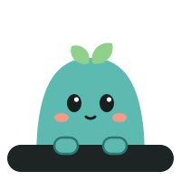

Uma tarefa por vez.Um passo de cada vez.
Um app gratuito para quem tem TDAH. Sem configuração, sem lista infinita, sem alarme. Só o próximo passo, à vista, com alguém trabalhando do seu lado.
Grátis · sem cadastro · Mac com Apple Silicon (M1 ou mais novo) e Windows 10/11
Como funciona
A maioria das ferramentas de produtividade pede para você planejar tudo antes e cobra quando algo atrasa. O Focora faz o contrário: pede só o primeiro passo minúsculo e acolhe quando a atenção escapa.

Uma barra, um passo
Uma barra pequena fica por cima de qualquer programa com o passo atual. Nunca aparece uma lista longa.
Timer que conta para cima
Sem contagem regressiva nem alarme. Aos 5 minutos, a cor vira âmbar e o mascote põe os fones: você entrou em flow.
Perdi o foco
Um clique e o app pergunta com calma: a tarefa travou? Quer um passo menor? Quer guardar para depois?
Cabeça cheia
Despeje os pensamentos numa gaveta, respire 30 segundos e volte só para o passo atual.
Por dentro do Focora
Estas são as telas do próprio programa, desenhadas com o mesmo código do app.
Seus dados ficam no seu computador
O Focora não tem conta, cadastro, nuvem nem rastreamento. Suas tarefas, passos e anotações ficam num arquivo dentro do seu próprio computador e não são enviados para lugar nenhum.
- Mac:
~/Library/Application Support/com.flowmodoro.app - Windows:
%APPDATA%\com.flowmodoro.app
A pasta mantém o nome antigo do projeto para que quem já usava não perca nada ao atualizar.
O código está à vista
O código do Focora é público no GitHub: qualquer pessoa pode ler e conferir que ele não tem nada malicioso. O app só usa a internet em dois momentos:
- na janela Sons, que carrega os geradores de ruído do myNoise;
- para procurar atualizações no GitHub (mais abaixo).
Por que o Mac diz que o app não é verificado?
Para o macOS reconhecer um app como "verificado", o desenvolvedor precisa pagar a assinatura anual do programa de desenvolvedores da Apple (US$ 99 por ano). O Focora é um projeto pessoal e gratuito, então ainda não tem essa assinatura.
Por isso, na primeira vez que você abre, o macOS avisa que não consegue verificar o app. O aviso não significa que encontrou algo errado: significa só que a Apple não analisou o app. O código está aberto para você conferir.
No Windows acontece algo parecido: pode aparecer "O Windows protegeu o computador". Clique em Mais informações → Executar assim mesmo.
Como abrir no Mac
- Abra o
.dmge arraste o Focora para a pasta Aplicativos. - Abra o Focora. O macOS vai avisar que não pode verificá-lo; clique em OK.
- Vá em Ajustes do Sistema → Privacidade e Segurança, role até o fim e clique em Abrir Mesmo Assim.
- Confirme com sua senha. Isso só precisa ser feito uma vez.
Prefere o Terminal? Depois de arrastar para Aplicativos:
xattr -dr com.apple.quarantine /Applications/Focora.app
Atualiza sozinho
A partir da versão 0.2.0, o Focora procura versões novas sozinho, baixa em segundo plano e só instala quando nenhum timer está rodando. Depois ele reabre exatamente onde você parou. Você não precisa baixar nada de novo.
Cada atualização é assinada digitalmente. O app só instala uma atualização que tenha a assinatura do autor, então ninguém consegue empurrar uma versão falsa.